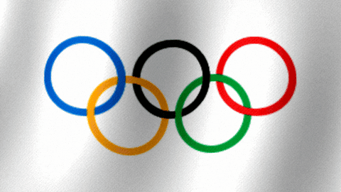

Olimpiadas en AR
Apuntá la cámara a los markers y descubrí momentos épicos de los Juegos Olímpicos.
Markers disponibles
🏃♀️ Atleta — apuntá para ver la animación
🏀 Basquetbolista — apuntá para ver el video
⚾ Beisbolista — apuntá para ver YouTube
📷 Activar cámara AR

Buscando markers...
✕ Salir de AR
Paris 2024
✕